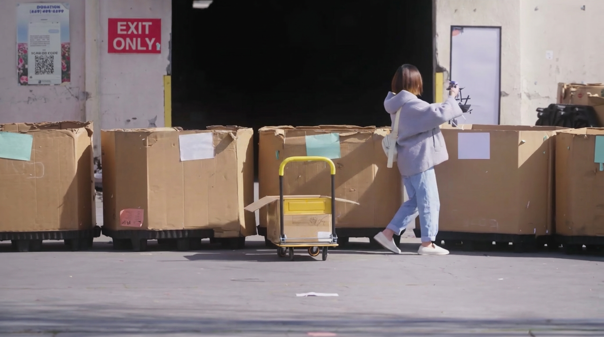
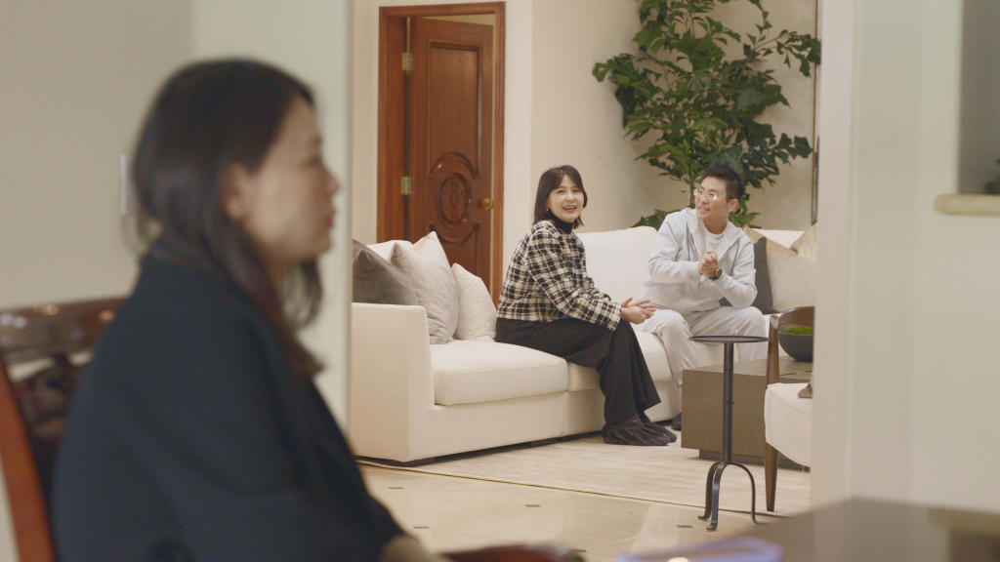
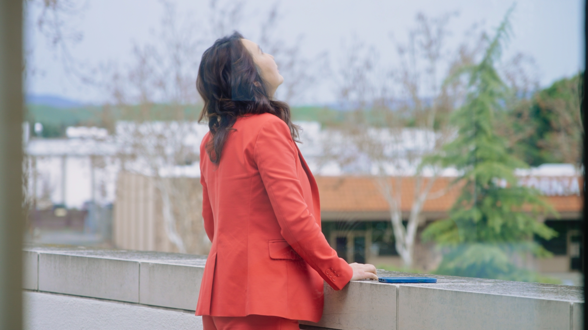

Amy left her job at a major Silicon Valley tech company—and soon realized she might have to let go of her home as well. What started as a simple plan to rent out her house quickly became more complicated. Ongoing rental restrictions forced her to make an unexpected decision: to sell the home she had carefully built with her own hands. This was never just about selling property. It became a deeper process of letting go—of security, identity, and the idea of stability itself.
For many families, buying a home is never just about real estate—it is about expectations, identity, and the kind of future parents hope to build for their children. Dublin Mayor Sherry Hu wanted to buy a home in the Bay Area for her two children, hoping that after graduation, they would choose to stay close and build their lives near family. To her, a house meant more than property—it was security, stability, and one of the clearest ways a mother could show love. But for her children, raised in the U.S., home meant something different. They valued independence and the freedom to decide their own paths, without feeling tied to a place chosen for them.
For this transgender couple with five children, the real challenge is something deeper—learning how to truly understand each other. They came to Silicon Valley hoping to build a stable home for their kids. But from the very beginning, their housing preferences revealed major communication gaps: What looks like a debate about houses is actually years of unspoken fears, expectations, and love finally surfacing. With the help of The Healing Club, they take on a series of heart-opening exercises—small games that uncover big truths.
The Latest Episode